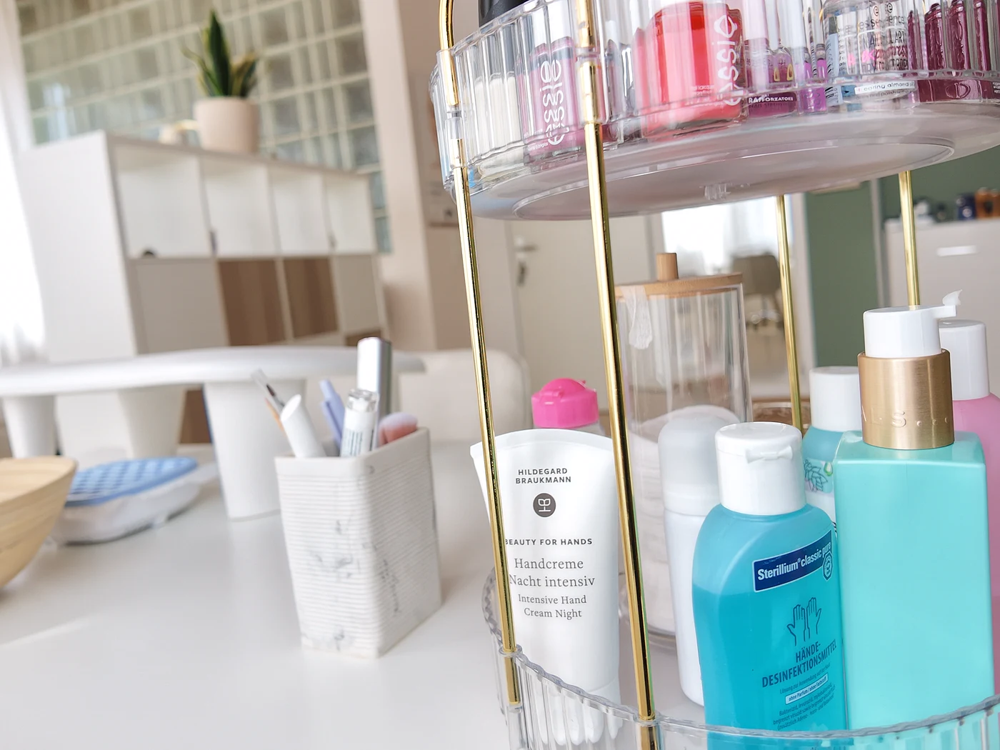

Wenn die Haut nach Feuchtigkeit verlangt.
Heizungsluft, Sonne, Stress oder einfach der Hauttyp: Viele Hautbilder verlieren Feuchtigkeit und wirken dann fahl, spannen oder zeigen feine Trockenheitsfältchen. Hydro Boost setzt genau dort an.
Nach einer kurzen Hautanalyse reinigen und peelen wir die Haut, damit die Wirkstoffe gut aufgenommen werden. Ein Feuchtigkeitsserum und eine intensive Hydro-Maske versorgen die Haut, eine passende Abschlusspflege hält die Feuchtigkeit.

Ideal, wenn: Ihre Haut spannt, trocken oder müde wirkt, nach dem Sommer oder im Winter Pflege braucht – oder als Vorbereitung auf einen besonderen Anlass.